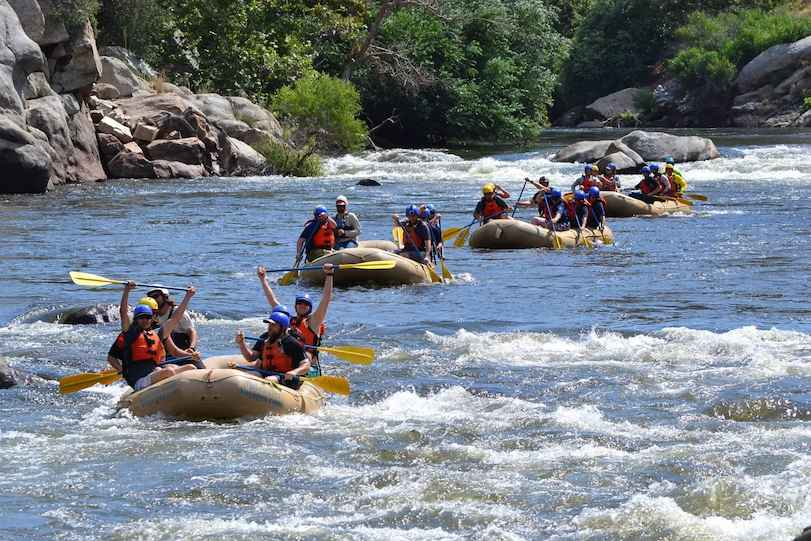

Lower Kern Family Fun
Perfect for families and first-time rafters, this gentle float on the Lower Kern offers stunning scenery and a relaxing introduction to whitewater rafting. Enjoy calm stretches mixed with beginner-friendly rapids.
- Duration: Half-day or Full-day
- Difficulty: Beginner (Class I-II)
- Price: $35 per person